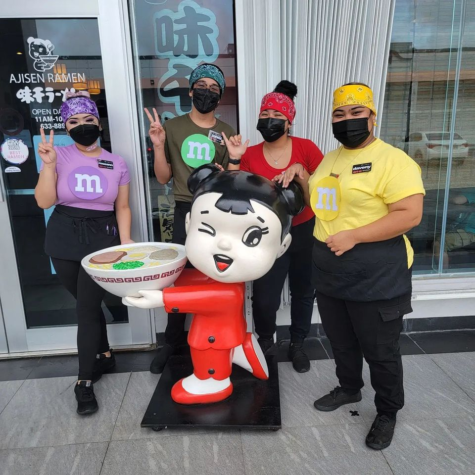

Our Story


Our slogan
Ajisen Ramen is “World Ramen”, and the slogan of Ajisen is "Assuring, Safe and Healthy" .
Founded in Kumamoto, Japan in 1968, Ajisen Ramen is now the world largest Ramen chain with over 700 restaurants operating worldwide. With a target of operating 1000 restaurants globally, we are famed as the “World Ramen”.
Ajisen's Secret….
There is something peculiar about Ajisen Ramen and it's all in the soup. Our Ramen's Tonkotsu soup can help to prevent aging!
The Japanese Society of Nutrition & Food Science announced in a general meeting, “The intake of collagen contained in the bones and cartilage, etc prevents aging.” Collagen is a protein, mainly found in the skin, tendon, bone, cartilage and other connective tissues. This protein is the essence of life because it easily makes up one third of the 60 trillion body cells. And our Tonkotsu soup has lots of collagen!
What is health without taste? A feature of Kumamoto Ramen is Senmiyu; a rich brown sauce that accompanies the fair Tonkotsu soup. Our unique culinary methods ensure that all the flavors are sealed into the sauce. In fact, we guarantee that your taste-buds will be bowled over by our Tonkotsu/Senmiyu combination!
Let's stay young the tasty way! Ajisen Ramen!
Copyright © Ajisen Ramen 2023 done by [Jia Sheng 222257U].